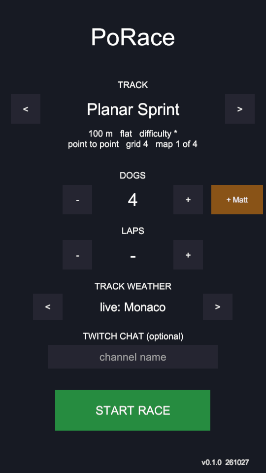
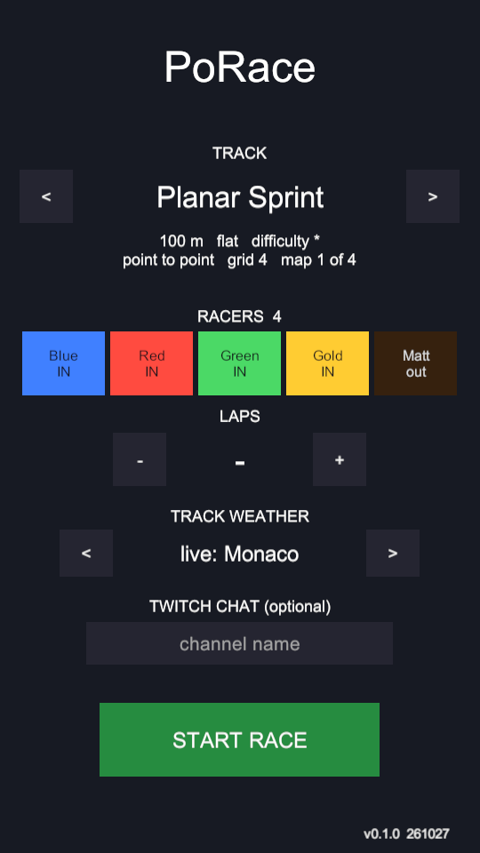

Main menu: pick who races
2026-10-27 · Menu.unity (MenuBuilder) · 540×960 captures from the Windows player via ShotProbe



Behaviour
- Tap a chip to put that racer on the grid or take them off. The last racer can't be removed.
- On banked and steeplechase maps, Matt's chip reads “flat only” and can't be picked. If Matt was the only pick, Blue starts.
- Picks are saved (
PoRace.dogMask,PoRace.matt). Autoplay still races everyone. - Blue's bodies are the base of the shared MuJoCo model, so when Blue is out it stays in the model, hidden and parked 40 m off the track. Other dogs are removed from the model as before.
- Headless check:
-raceTest -dogMask 10 -matton Planar Sprint passed all model checks. Gold 68.76 s, Red 71.56 s; Matt DNF (known m6 policy issue).